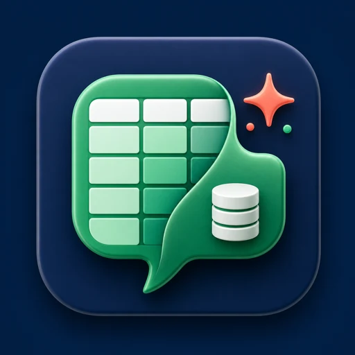

Regolo.ai
Scenario consigliato per aziende italiane/europee che vogliono una scelta cloud pragmatica e orientata alla compliance.

TalkToMyExcelProvider consigliato
TalkToMyExcel è multi-provider, ma Regolo.ai è la configurazione consigliata quando il punto non è solo ottenere una risposta, ma sapere dove passano prompt, output e dati sensibili.
Consigliato
Provider europeo di inferenza AI, compatibile con le API OpenAI, pensato per scenari in cui privacy, sovranità dei dati e auditabilità sono parte della scelta tecnologica.
Perché conta
Nei fogli aziendali spesso vivono listini, margini, ticket, difetti, seriali, anagrafiche clienti e note operative. Usare un provider qualsiasi solo per comodità espone l'azienda a rischi difficili da spiegare dopo.
Regolo.ai offre un percorso orientato alla sovranità del dato: infrastruttura europea, endpoint compatibili e zero retention nella configurazione consigliata. Garanzie e localizzazione effettive vanno confermate nel piano e nel contratto scelti.
Scelte possibili
Scenario consigliato per aziende italiane/europee che vogliono una scelta cloud pragmatica e orientata alla compliance.
TalkToMyExcel può parlare con provider compatibili con le API OpenAI configurati in modo centralizzato.
Per requisiti estremi si può valutare un endpoint locale, accettando costi e complessità infrastrutturali maggiori.
Messaggio per il cliente
Stiamo scegliendo un percorso AI che tiene conto del valore del dato aziendale: isolamento, evidenze, provider europeo e controllo operativo.
Leggi la pagina sicurezza